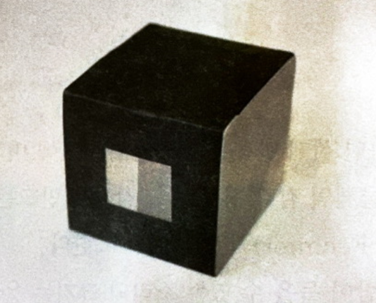

실험 과정
실험 준비물 : 가위, 전구, 눈금자, 파라핀, 알루미늄박, 검은색 종이, 셀로판, 테이프, 커터갈, 핫플레이트, 양초, 점화기, 전등, 철판
간이 측광기(분젠 조도계) 만들기
- 잘라놓은 파라핀을 핫플레이트를 이용해 표면을 매끄럽게 녹인다.
- 두 파라핀 사이에 알루미늄박을 끼운 후 두 파라핀을 붙여 정육면체 형태로 만든다.
- 검은색 종이로 파라핀과 알루미늄박의 경계면이 보이는 4면을 감싼다.
- 두 파라핀의 경계를 중심으로 2cm x 2cm인 네모진 창을 만든다.

촛불의 광도 측정
- 100W 전구와 촛불을 적당한 위치에 고정하고 전구와 촛불을 켠다.
- 간이 측광기를 100W 전구와 촛불 중간 정도의 위치에 두고 간이 측광기의 파라핀 양쪽의 밝기를 비교한다.
- 간이 측광기의 파라핀 양쪽의 밝기가 같아지는 지점의 위치를 찾아 전구와의 거리, 촛불과의 거리를 측정한다.
- 전구에 밝기를 다르게 해가며 촛불의 밝기를 W단위로 구한다.
돌아가기